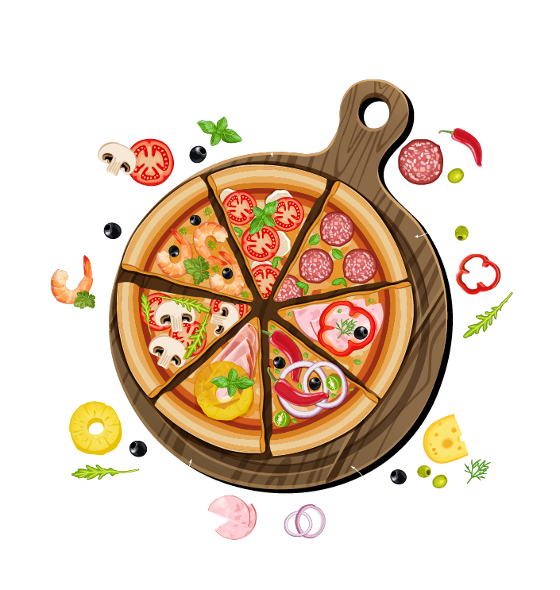
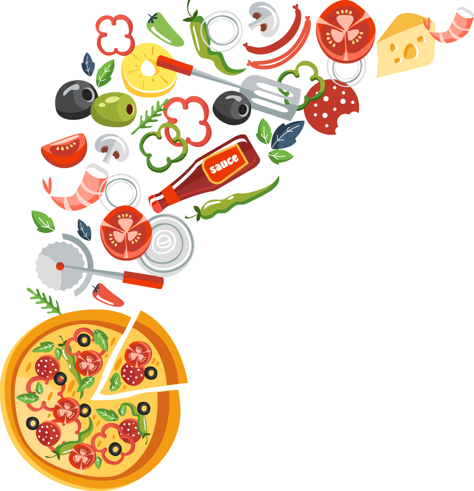

Приготуємо смачну піцу!
Тонко, соковито, м’яко, тепло, ароматно — це все про неї, про піцу! Ідеальне поєднання продуктів, яке дарує смак літа кожного разу, як ти відкриваєш коробку.
Подаруй насолоду внутрішньому ласунчику.
Тобі знадобляться такі інгредієнти для приготування тіста:
- Мука — 300 г
- Вода — 220 мл
- Сіль — одна чайна ложка
- Сухі дріжджі — 6 г
- Оливкова олія — 2 столові ложки
Залий теплою водою дріжджі, посоли суміш, ретельно перемішай. До розчину дріжджів додай оливкову олію та муку. Замісі тісто. Постав тісто в тепле місце на півгодини, аби воно як слід підійшло.


Тобі знадобляться такі інгредієнти для начинки:
- Сир
- Томатний соус
- Шинка
- Гриби
- Оливки
Змішай начинку, виклади на тісто та запікай до ідеального розплавлення сиру. Твоя піца буде соковитою, ароматною та неперевершеною.
As you read this, you're already tasting the deliciousness of our homemade pizza!
So take a time and read the pizza history:
Pizza[a] is an Italian dish typically consisting of a flat base of leavened wheat-based dough topped with tomato, cheese, and other ingredients, baked at a high temperature, traditionally in a wood-fired oven.
The term pizza was first recorded in AD 997, in a Latin manuscript from the southern Italian town of Gaeta, in Lazio, on the border with Campania.[2] Raffaele Esposito is often credited with creating the modern version of pizza in Naples at the end of the 19th century.[3][4][5][6] In 2009, Neapolitan pizza[7] was registered with the European Union as a traditional speciality guaranteed (TSG) dish. In 2017, the art of making Neapolitan pizza was included on UNESCO's list of intangible cultural heritage.[8]
Pizza and its variants are among the most popular foods in the world. Pizza is sold at a variety of restaurants, including pizzerias, Mediterranean restaurants, via delivery, and as street food.[9] In Italy, pizza served in a restaurant is presented unsliced, and is eaten with the use of a knife and fork.[10][11] In casual settings, however, it is typically cut into slices to be eaten while held in the hand. Pizza is also sold in grocery stores in a variety of forms, including frozen or as kits for self-assembly. Store-bought pizzas are then cooked using a home oven.
In 2017, the world pizza market was US$128 billion; in the US, it was $44 billion spread over 76,000 pizzerias.[12] Overall, 13% of the US population aged two years and over consumed pizza on any given day.[13]